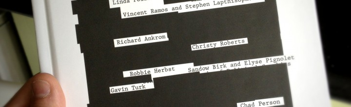
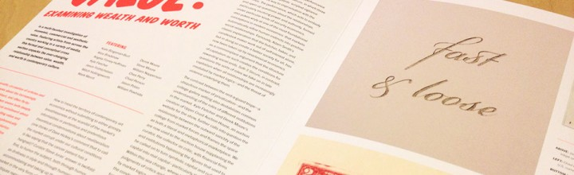
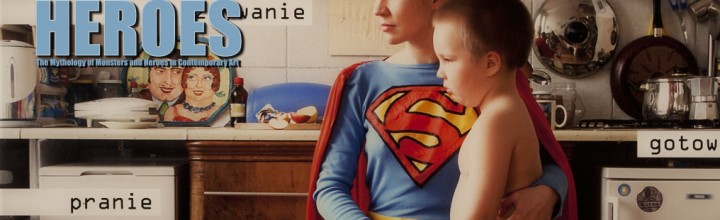
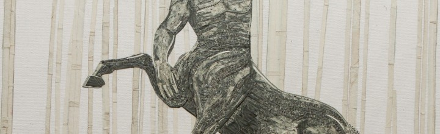

Carnegie Art Museum – Under the Influence of Fashion and Finance
See my work at the Carnegie Museum of Art (CAM) from Dec 15, 2013 – Feb 17, 2014
Miami Project 2013
Work from my new series Here There Be Monsters is on view at Miami Project 2013 with Richard Levy Gallery.
Collecting is Curiosity/Inquiry: New Mexico Museum of Art

One of my Worshiping Mammon currency mosaics is on display at the New Mexico Museum of Art in Santa Fe Sept 20, 2013 – Apr 13, 2014.
True Believers at the TAM

If you are in Torrance (or anywhere for that matter) before October 12th, get down there and see Hero in person.
Marginal Revolution – KUAD Gallery – ARTRA
Following Baker’s Dozen 5 at Torrance Art Museum, Marginal Revolutions traveled to KUAD Galery in Istanbul. Given the recent political unrest and public protest, it was an exciting time to be showing at KUAD Gallery. I sent two new TaxCut works – attack drones made from US Currency. This Show was organized by […]
Baker’s Dozen 5 – Torrance Art Museum
I was excited to be included in Baker’s Dozen V (A Marginal Revolution) at Torrance Art Museum. Check out this tiny preview: You can see the works here Following the show in Torrance, the works travelled to KUAD Gallery in Istanbul. […]
Market Value at Columbia College
I am excited to participate in Market Value, a show designed to crtique of wealth and worth at Columbia College in Chicago. Steve Juras did an excellent job curating a group of thougthful and impressive artists. Read the details below: Curated by Steve Juras Show dates: February 28 – April 20, 2013 Opening Reception: February […]
We Could be Heroes – BYU
This has been a great year for University shows. Topping that cake is We Could be Heroes at BYU in sunny Provo, Utah. I was honored to be included among giants like Takashi Murakami, Yoram Wolberger, Tristin Lowe.
Go East at Joshua Liner Gallery opening April 19, 2012
Barbarian Dominion, US Currency on canvas, 16″ x 16″ 2012 This piece (along with several new works) will be on view at Go East (curated by Mark Moore Gallery) at Joshua Liner Gallery in NYC. The opening reception is Thursday April 19th from 6-9pm. Please join me at the gallery on May 5th, 2012 for […]